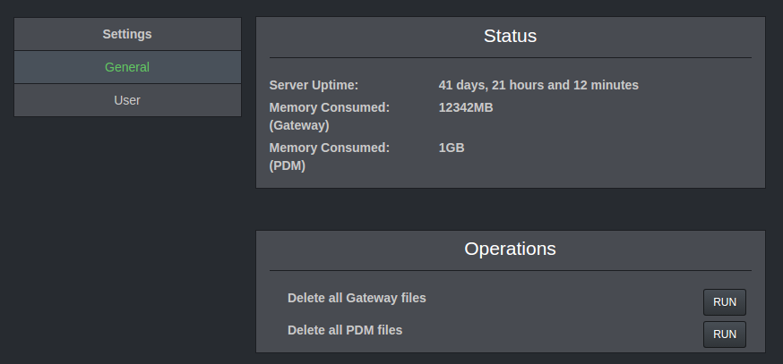

Gateway
(current)
PDM
Settings
Help
Sign Out
Help
Overview
Gateway
PDM
Settings
Settings
On the right corner of the page, 3 vertical dots are there which symbolises the options menu.
The options menu has the following sub-menu.
Click on the Settings option from the dropdown menu.
After clicking on the settings option, the following window appears.

There are two options in the settings panel:
1)General Settings
2)User Settings
General settings shows the status regarding the server uptime as well as the memory consumed by the gateway and the pdm.
The user settings allows to add user information as well as the credentials of the user.